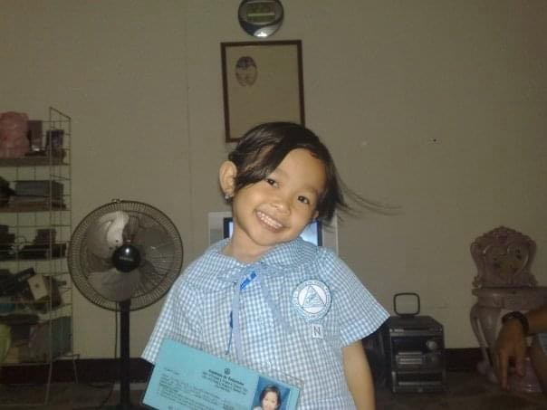
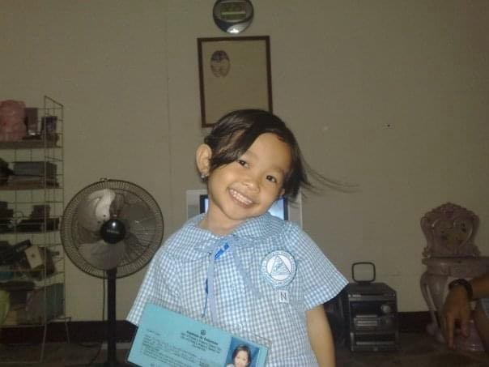

My childhood was a fulfilling and joyful time filled with simple yet meaningful experiences.1 Coming from a middle-class family, I was raised by loving and supportive parents who instilled in me the values of education and perseverance.2 One of the fondest memories of my childhood was playing outside with my friends, staying out until dusk, and waiting to see whose parents would call them home first.3 We would run around the neighborhood, play traditional games, and laugh until our stomachs hurt.4 I was fortunate to grow up in an environment where outdoor play was encouraged, allowing me to develop strong social skills.5 Academically, I was taught to value and enjoy learning, which helped me become a consistent honor student, earning numerous medals and awards.6 My parents always emphasized the importance of education, and I took pride in excelling at school.7 I attended Academia de Bellarmino, where I developed strong connections with my teachers, school staff, and classmates.8 I was actively involved in school activities, serving as the class president and earning a leadership award for my contributions.9 I enjoyed organizing events, leading class discussions, and taking responsibility for various tasks.10 My confidence grew as I interacted with different people and honed my leadership skills.11 Aside from academics, I also participated in extracurricular activities, including school clubs and competitions.12 I loved reading books, solving puzzles, and engaging in creative writing.13 My childhood was filled with warmth, laughter, and achievements that laid the foundation for my future endeavors.14 Family gatherings were another highlight of my early years, where I bonded with relatives over food and shared stories.15 Holidays were always special, with traditions that made every occasion memorable.16 I looked forward to celebrating birthdays, Christmas, and other events that strengthened family ties.17 Overall, my childhood was a period of joy, discovery, and the beginning of my lifelong love for learning.18
GO TOPMy teenage years were a time of self-discovery and challenges, especially during high school.1 I initially aspired to enter Quezon City Science High School, but after failing the entrance exam, I was heartbroken, not because I didn’t pass, but because I feared disappointing my parents.2 My older sister had successfully entered the school and later secured a scholarship at the University of the Philippines, setting a high standard.3 However, my parents reassured me that trying my best was what truly mattered.4 Instead, I attended Quezon City Academy, where I experienced a culture shock, as it was my first time transferring schools and adjusting to a larger environment.5 I struggled with my self-esteem, felt overwhelmed, and initially refrained from participating in extracurricular activities.6 The transition was difficult, and I often compared myself to my peers, wondering if I was good enough.7 Despite these challenges, I remained a consistent honor student and ranked among the top in my grade level.8 Over time, I developed close friendships, though I became more introverted and cautious in trusting new people.9 I realized the importance of surrounding myself with genuine friends who uplifted and supported me.10 For senior high school, I enrolled in the University of the East Caloocan under the STEM strand.11 This phase of my life was more enjoyable, as I gained valuable experiences both inside and outside of school.12 I formed a solid circle of friends with whom I bonded over meals, studies, and various outings.13 We helped each other through academic struggles, shared dreams, and celebrated small victories together.14 Academically, I excelled once again, graduating with honors and high honors.15 I became more confident in my abilities and embraced my strengths.16 Senior high school also exposed me to various opportunities that shaped my career aspirations.17 I participated in group projects and had our research as well.18 These experiences helped me become more resilient and prepared me for the challenges ahead.19 Although my teenage years had their ups and downs, they played a significant role in shaping my identity and preparing me for the future.20
GO TOPMy college experience began with a rocky start.1 As a late enrollee, I had no prior connections with my classmates and was placed in a free section, which made it difficult to form lasting friendships.2 Though my classmates were approachable, I didn't develop close bonds during my first semester.3 I often felt isolated and struggled to adapt to the fast-paced nature of college life.4 However, things began to improve when I joined a block section during my second semester.5 It was there that I met a group of friends who remain by my side as I continue my studies.6 They provided me with the support system I needed, making my college life more enjoyable.7 Pursuing a Bachelor of Science in Information Technology (BSIT) was initially a challenge, especially since my senior high school education in STEM didn’t include much exposure to ICT or programming.8 At first, I found programming intimidating and doubted whether I could excel in the field.9 Despite these fears, I remained determined to succeed.10 I studied more and focused on improving my coding skills.11 Over time, I saw improvement, and my grades consistently reflected my efforts.12 While I may not be the best at everything, I’ve learned to focus on personal growth rather than perfection.13 College life has taught me the importance of balance, and I prioritize staying motivated while avoiding burnout.14 Outside of academics, I made time to explore new interests and experiences, expanding my horizons beyond the classroom.15 These experiences helped me realize my passion for both technology and personal development.16 My career goals became clearer as I gained more exposure to the tech industry.17 I dream of one day working in the field, gaining experience, and eventually starting my own business.18 Traveling and experiencing different cultures is also a major part of my life, and I’m grateful that my family shares this love for exploration.19 As I continue my college journey, I feel more equipped to face the challenges ahead.20 Though the road is long, I am optimistic about the future and excited to take on whatever comes next in both my career and personal life.21
GO TOP